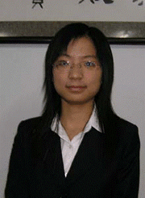

敢想敢干 超越自我
题记：未曾清贫难成人，不经打击老天真。自古英雄出炼狱，从来富贵入凡尘。醉生梦死谁成器，破马长枪定乾坤。
尊敬的各位老师、同学：
大家好！
我是来自计算机学院2003级计算机科学与技术专业的王玥。今天我演讲的题目是《敢想敢干，超越自我》。
曾经听说每一只蝴蝶都是一朵花的轮回，听说寂寞的花儿总是在寂寞的夜里枯萎，蝴蝶不曾许诺在茧里静静地流泪，因此它用生命寻
尊敬的各位老师、同学：
大家好！
我是来自计算机学院2003级计算机科学与技术专业的王玥。今天我演讲的题目是《敢想敢干，超越自我》。
曾经听说每一只蝴蝶都是一朵花的轮回，听说寂寞的花儿总是在寂寞的夜里枯萎，蝴蝶不曾许诺在茧里静静地流泪，因此它用生命寻
找芬芳的花蕊。我不是蝴蝶，却也不曾妄自菲薄。我也憧憬繁花似锦的生活，想象有一天能破茧成蝶，穿过一切艰险与崎岖，超越自我，登上成功的顶峰。于是我走进东师，于是我站在这里，与大家分享我的心得，演绎我的人生，讲述我的经历。熟悉我的人都知道，我是一个充满自信、充满活力，满脑子都是新想法的人。不管什么时候我总是坚信只要我想做的事，就一定能够做到，而且可以做好！踏进大学校门那一刻，连开机都不会的我就给自己定下了这样的奋斗目标：学习上勇争第一，工作上绝不放松，其他方面全面发展。在学习上，要有一股“韧”劲，咬定青山不放松，不达目的不罢休；在工作上，要有一股“勇”劲，敢想敢干、事争一流，有正视问题的勇气，有解决问题的能力。大学三年转瞬即逝，我觉得我可以当之无愧地说：我的努力没有白费，我基本完成了给自己定下的目标。现在我不但综合排名全系第一，而且在全国乃至全球各类比赛中多次获得不错的名次。我用三年时间创办的“师正软件”工作室，现在不但运作正常，而且在不到一年时间就完成了十余个项目，在学校，乃至在长春，也算小有名气。
小时候总有人说我是不幸的，或许是吧，从我记事起父母就双双下岗，仅靠两人做点小生意维持家用，还好日子清贫却不单调。然而命运的折磨并没有就此结束，在我念初二的时候，父亲因为长期操劳，肺病日益严重，最终转变成了严重的肺结核，高昂的手术费用让我们一家望而却步，由于当时我和弟弟都还小，父亲知道还有许多用钱的地方，所以他一直坚持保守治疗，时至今日就连上五层楼都得花上半个多小时。为了帮助母亲，我和弟弟曾在假期一起去饭店打工，年幼的我们听凭客人的使唤，小心观察着老板的眼色，稍有不周便会遭来训斥，我不知道他们是怎样对待他们的儿女，只是我的父母从来就没说过我们，对我们连大声说话的时候都很少。后来实在干不下去，我们又在街边摆小摊，人来人往，对我们投以或同情或不解甚至不屑的目光。直到现在，每当我看到小孩子在路边摆摊，我还会想起当初的一幕一幕，一种莫名的酸楚不禁涌上心头；为了我能够顺利完成学业，弟弟在高考时以超过重点线一百多分的成绩去了军校放弃了他从小的清华梦；为了尽快减轻家里的负担，在保研时我没有去联系好的中科院而选择了电子科技大学，因为在那里我不但可以得到公费的资格，而且可以一边工作一边完成我的学业。在我刚念大一的时候我就和妈妈商定，家里仅负担我一年的生活费用，其余三年我要自食其力。但我觉得我是幸运的，我的家庭很贫困但充满温馨，爸爸妈妈给了我和弟弟全部的爱。到现在我还清楚地记得小时候因为家里太小了，没有地方摆书桌只能等吃完饭才能把饭桌收拾出来让我和弟弟做作业。每天吃完饭妈妈就会把桌子收拾好，自己坐在桌旁一边织毛衣一边为我和弟弟辅导功课，爸爸则在一旁看报练字。一直到现在每每碰到挫折的时候，这幅温馨的画面就会浮现在我眼前，我便觉得胸中充满了无穷的力量。弟弟也总像哥哥一样保护我，连我们在街上摆摊被城管追的时候，弟弟也总会拎起最重的东西跑在前面为我开路。2003年8月，我拿到了大学录取通知书，快乐之余便开始为高昂的学费发愁，就在我们一家束手无策的时候，遂宁市工会的叔叔阿姨为我送来了两千块钱，还答应我在我求学期间，会每年为我提供两千块的助学金。家庭的温暖、社会的关怀帮助我战胜了贫困。贫困是一种磨难，磨难是一种最好的资源，在磨难中，我不断努力，奋勇拼搏；在磨难中，我不断进取，找回自信。我觉得贫困是我最好的大学，它不但教会了我坚强、独立、乐观，教会了我用一颗感恩的心勇敢地面对生活，更让我深深的明白，只要相信自己，敢想敢干，就一定可以超越自我！
在东北师大，学习、科研、创业一直是校园生活中的三大主旋律。生活在师大校园的我，大学生活自然也是围绕这三个方面展开的。我认为对于计算机专业的学生来说，学习和科研是密不可分的，学到的知识一定要及时用到实践中才能变成自己的东西。入学后我就十分注意自己动手能力的培养，但自己看书自学速度很慢，而且学到的东西很快就会忘记。为了这个问题我苦恼了很长时间，一个偶然的机会我加入了学校办公室网络工作室——E翔工作室，这应该是我大学生活中做的最重要也是最正确的一个决定。在这里我们总是面对不同的工作，所以就得不断地学习新东西，不断充实自己。在E翔工作室的短短一年时间里，我除了学到了很多在课堂里学不到的知识与动手实践的经验外，更重要的是培养了自己创新而严谨的思维方式，坚忍不拔的韧性与毅力，与人合作相互协调的团队精神。正是这些点滴积累的经验，让我敢于说这个东西我会做，为我以后的发展争取到了更多的机会。同时，E翔让我发现了适合自己的学习方法，让我明白只有在学习中去实践，从实践中学习才能不断提高自我。为了得到更进一步锻炼，我先后三次参加大学生数学建模大赛，并有幸代表东北师大参加了2006年全球大学生数学建模大赛，并取得了不错的成绩，开了师大在这项比赛中获奖的先例。三年来，我也很注意自己动手能力的培养，我多次在各类计算机类比赛中获奖，并一次性通过国家中级软件设计师考试，还代表师大参加了吉林省金铖杯计算机职业技能大赛，获得了学生组第三名，取得了多媒体设计师资格。
为了解决自己学习生活的费用问题，在同学们都忙于军训的时候我就开始寻找自己的经济来源。经过分析，我选择了家教作为我大学生活中的第一份工作。很快我就发现，对于计算机专业的学生来说，做家教并没有多大的优势，我们应该充分发挥自己的专业技术优势。扎实的计算机专业基础知识，加上在E 翔工作室的实践工作项目经验的积累，我脑海里渐渐萌生了自主创业的念头，很快我就开始了创业的探索与尝试。大学生创业一直是一个永恒的话题，身边同学在创业时大多选择服务业，但我认为在创业方面，不能盲目，要走一条适合自己的创业之路，充分发挥自身的优势，同时也要记住细节决定成败，不能忽视任何细节性的问题。考虑到自身的情况后，对自己的创业方向有了初步的明确，我是学计算机专业的，加上平时又有不少项目实践的经验，于是我就决定从自己所擅长的计算机技术着手，走科技创业之路。因为这样不但起点较低，没有什么资金要求，同时还可以为日后的发展积累资金和社会实践经验，我向来都是“初生牛犊不怕虎”，只要能想到，我就一定要做到，只要我坚持不懈的努力，我坚信自己一定能在创业的道路上闯出自己的一片天地。我的想法一提出，就得到几个同学的全力支持。尽管创业中有很多的困难，但好强的我觉得要做就要做好，既然要创业就一定要向成功的方向努力。经过一番分析，我觉得要成功创业必须先积累经验，才能继续下一步的计划。积累经验阶段整整花了我们两年时间，在这两年里，熬夜可以说是我们的家常便饭。在完成的十多个项目中，对我们影响最大的项目应该是校团委量化考核系统和吉林省电视台《回家》栏目的网站制作。一直以来我们所做的工作都是网站，校团委量化考核系统是我们接手的第一个软件。从了解用户需求到实际编程实现，每一步对我们来说都是一个挑战，而且每一步对我们来说都很重要。为了这个系统，整整半个月我们三个没有吃过一顿好饭，没有睡过一个好觉。但因为充满激情，充满创作，我们从来没有感觉到累，更没有过放弃的想法。系统做出来以后得到了团委老师的一致好评，开创了师大团组织量化考核的先河，也让我们了解了软件制作的基本流程。另一个让我们受益匪浅的项目是为吉林省电视台《回家》栏目制作的网站。这是我们做过的最大的项目，我们的客户是搞文艺工作的，他们对什么都讲究感觉，只有看到了成品才能告诉你是不是他们想要的东西。加上他们对细节追求完美，常常因为一个小细节否定我们几天甚至十几天的工作成果。这个工作花了我们两个多月时间，但经过这次锻炼我们都成长了很多，更重要的是再一次又一次的返工中我们深深体会到了团队协作的重要性，如果没有大家的共同努力这个项目根本就没有圆满完成的可能。当然创业的道路上不可能总是充满阳光的，我们也碰到过刁钻的客户，也做过没有要的项目，为了这些我哭过鼻子，掉过眼泪，但很庆幸我们熬过来了。两年时间，我们不但积累了实际工作的经验，配合时的默契，更重要的是形成了流水化的工作方式。在我们的团队中，每一个人负责的都是我们熟悉和擅长的部分，这样一来我们的作品不但在质量上还是在数量上都上了一个很大的台阶。因为专业，所以最好；因为最好，所以我们得到了更多的机会。我们认真的态度和专业的作品得到了客户的一致好评，客源也越来越好。
当我们觉得时机成熟的时候，我们推出了自己的工作室——“师正软件”。取意：学高为师，身正为范。因为我们来自师大，是师大给了我们这片闯荡的天地。我们将工作室定位为：主要面向教育技术、教育信息化，努力走向社会。工作室刚成立，我们就接到了工作室的第一个项目，为吉林省博览局开发东北亚博览会的展商信息管理系统。这个项目花了我们一个月时间，虽说很苦很累，但我们做出来的东西完全符合博览局领导的要求，给了我们很高的评价。我自己也非常满意这份工作，因为在完成的过程中，我们逾越了很多自己都认为难以逾越的障碍，不仅为工作室挣了一个开门红，更为以后的工作积累了经验，增加了信心。这份工作后，工作室一鼓作气，短短一年时间先后完成校纪检委、组织部、妇委会、525专题、香港海思特有限公司等十多个校内外项目。现在师正可以说已经渡过了最艰难的创业期，我相信只要我们肯努力，敢想敢干，师正就一定能走得更好，更远。
在努力创业的同时，我从来都没忘记过自己首先是一名学生，学生的天职是学习，不管我有多忙都从来没放松过对学习的要求。而且我觉得我的工作根本没有耽误我的学习，在工作中我所学到的东西不断的得到应用，不仅加深了我对专业课的理解，而且在学习新东西的时候老师一讲我的脑袋里就会自动形成概念，学习起来自然事倍功半。对于学习我所要做的就是挤时间！工作室所接的活一般都是有时间限制的，加上采用项目负责制，分工协作，一个人的工作进程会影响到整个团队的项目进度，只要有项目我就必须全心投入工作中。没有项目的时候，我必须抓住一切可以利用的时间学习，在学习上我发扬了雷锋的钉子精神，一是能挤，二是能钻：获得时间靠挤，弄懂问题靠钻。我也要像钉子一样，每一天、每一小时、每分每秒都争取有效地利用起来。寝室的同学都说我精力充沛，大学三年我几乎没有逛过街，即使放假期间，我也坚持在七点以前起床，晚上一般都是十一点以后睡觉。我还有一个大家都羡慕的特点，不管做什么我都能全身心的投入，经常都是早上到自习室开始学习，等我抬头的时候常常都已经下午。我的努力没有白费，在不经意中我越过了学习上的一座座高峰，取得了令自己满意的成绩。大学三年，我取得了综合排名第一专业排名第二的好成绩。大学让我充实，也让我辉煌。
其实一个人成功，并不是真正的荣耀。正如我的辉煌并不只是我个人的努力结果。就像那些曾经给过我支持和帮助的那些师长和朋友一样，我在学习和创业的同时，也不忘记将我的真诚和热情奉献给大家。大学三年我先后担任军训副指导员、学习委员；大二至今一直担任团支书、党支部委员。在这期间，我领导的团支部荣获五四优秀团支部；个人也两次被校党委组织部评为学院级优秀党员。
告别纯真的大一，历经懵懂的大二，走过充实的大三，而今看来大学生活已所剩无几，物欲横流没有流尽我的坚贞，歌舞升平没有平息我的士气，风花雪月没有削减我的斗志，世事纷扰更没有扰乱我的步伐。在这样一段时光里，我付出了多少，又收获了多少，我已无心计较，我只知道那些成绩都属于历史，只是耳边依稀会回响起老师的赞扬与肯定，记忆里还残存着同学的敬佩与信任。往事如斯，曾经和现在的我承载着家人的关怀，师长的期望，朋友的祝福：现在和未来的我意气风发，踌躇满志，斗志昂扬。前路光明平坦抑或蜿蜒崎岖，但我坚信，只要敢想敢干，必将超越自我，登上胜利的巅峰！
小时候总有人说我是不幸的，或许是吧，从我记事起父母就双双下岗，仅靠两人做点小生意维持家用，还好日子清贫却不单调。然而命运的折磨并没有就此结束，在我念初二的时候，父亲因为长期操劳，肺病日益严重，最终转变成了严重的肺结核，高昂的手术费用让我们一家望而却步，由于当时我和弟弟都还小，父亲知道还有许多用钱的地方，所以他一直坚持保守治疗，时至今日就连上五层楼都得花上半个多小时。为了帮助母亲，我和弟弟曾在假期一起去饭店打工，年幼的我们听凭客人的使唤，小心观察着老板的眼色，稍有不周便会遭来训斥，我不知道他们是怎样对待他们的儿女，只是我的父母从来就没说过我们，对我们连大声说话的时候都很少。后来实在干不下去，我们又在街边摆小摊，人来人往，对我们投以或同情或不解甚至不屑的目光。直到现在，每当我看到小孩子在路边摆摊，我还会想起当初的一幕一幕，一种莫名的酸楚不禁涌上心头；为了我能够顺利完成学业，弟弟在高考时以超过重点线一百多分的成绩去了军校放弃了他从小的清华梦；为了尽快减轻家里的负担，在保研时我没有去联系好的中科院而选择了电子科技大学，因为在那里我不但可以得到公费的资格，而且可以一边工作一边完成我的学业。在我刚念大一的时候我就和妈妈商定，家里仅负担我一年的生活费用，其余三年我要自食其力。但我觉得我是幸运的，我的家庭很贫困但充满温馨，爸爸妈妈给了我和弟弟全部的爱。到现在我还清楚地记得小时候因为家里太小了，没有地方摆书桌只能等吃完饭才能把饭桌收拾出来让我和弟弟做作业。每天吃完饭妈妈就会把桌子收拾好，自己坐在桌旁一边织毛衣一边为我和弟弟辅导功课，爸爸则在一旁看报练字。一直到现在每每碰到挫折的时候，这幅温馨的画面就会浮现在我眼前，我便觉得胸中充满了无穷的力量。弟弟也总像哥哥一样保护我，连我们在街上摆摊被城管追的时候，弟弟也总会拎起最重的东西跑在前面为我开路。2003年8月，我拿到了大学录取通知书，快乐之余便开始为高昂的学费发愁，就在我们一家束手无策的时候，遂宁市工会的叔叔阿姨为我送来了两千块钱，还答应我在我求学期间，会每年为我提供两千块的助学金。家庭的温暖、社会的关怀帮助我战胜了贫困。贫困是一种磨难，磨难是一种最好的资源，在磨难中，我不断努力，奋勇拼搏；在磨难中，我不断进取，找回自信。我觉得贫困是我最好的大学，它不但教会了我坚强、独立、乐观，教会了我用一颗感恩的心勇敢地面对生活，更让我深深的明白，只要相信自己，敢想敢干，就一定可以超越自我！
在东北师大，学习、科研、创业一直是校园生活中的三大主旋律。生活在师大校园的我，大学生活自然也是围绕这三个方面展开的。我认为对于计算机专业的学生来说，学习和科研是密不可分的，学到的知识一定要及时用到实践中才能变成自己的东西。入学后我就十分注意自己动手能力的培养，但自己看书自学速度很慢，而且学到的东西很快就会忘记。为了这个问题我苦恼了很长时间，一个偶然的机会我加入了学校办公室网络工作室——E翔工作室，这应该是我大学生活中做的最重要也是最正确的一个决定。在这里我们总是面对不同的工作，所以就得不断地学习新东西，不断充实自己。在E翔工作室的短短一年时间里，我除了学到了很多在课堂里学不到的知识与动手实践的经验外，更重要的是培养了自己创新而严谨的思维方式，坚忍不拔的韧性与毅力，与人合作相互协调的团队精神。正是这些点滴积累的经验，让我敢于说这个东西我会做，为我以后的发展争取到了更多的机会。同时，E翔让我发现了适合自己的学习方法，让我明白只有在学习中去实践，从实践中学习才能不断提高自我。为了得到更进一步锻炼，我先后三次参加大学生数学建模大赛，并有幸代表东北师大参加了2006年全球大学生数学建模大赛，并取得了不错的成绩，开了师大在这项比赛中获奖的先例。三年来，我也很注意自己动手能力的培养，我多次在各类计算机类比赛中获奖，并一次性通过国家中级软件设计师考试，还代表师大参加了吉林省金铖杯计算机职业技能大赛，获得了学生组第三名，取得了多媒体设计师资格。
为了解决自己学习生活的费用问题，在同学们都忙于军训的时候我就开始寻找自己的经济来源。经过分析，我选择了家教作为我大学生活中的第一份工作。很快我就发现，对于计算机专业的学生来说，做家教并没有多大的优势，我们应该充分发挥自己的专业技术优势。扎实的计算机专业基础知识，加上在E 翔工作室的实践工作项目经验的积累，我脑海里渐渐萌生了自主创业的念头，很快我就开始了创业的探索与尝试。大学生创业一直是一个永恒的话题，身边同学在创业时大多选择服务业，但我认为在创业方面，不能盲目，要走一条适合自己的创业之路，充分发挥自身的优势，同时也要记住细节决定成败，不能忽视任何细节性的问题。考虑到自身的情况后，对自己的创业方向有了初步的明确，我是学计算机专业的，加上平时又有不少项目实践的经验，于是我就决定从自己所擅长的计算机技术着手，走科技创业之路。因为这样不但起点较低，没有什么资金要求，同时还可以为日后的发展积累资金和社会实践经验，我向来都是“初生牛犊不怕虎”，只要能想到，我就一定要做到，只要我坚持不懈的努力，我坚信自己一定能在创业的道路上闯出自己的一片天地。我的想法一提出，就得到几个同学的全力支持。尽管创业中有很多的困难，但好强的我觉得要做就要做好，既然要创业就一定要向成功的方向努力。经过一番分析，我觉得要成功创业必须先积累经验，才能继续下一步的计划。积累经验阶段整整花了我们两年时间，在这两年里，熬夜可以说是我们的家常便饭。在完成的十多个项目中，对我们影响最大的项目应该是校团委量化考核系统和吉林省电视台《回家》栏目的网站制作。一直以来我们所做的工作都是网站，校团委量化考核系统是我们接手的第一个软件。从了解用户需求到实际编程实现，每一步对我们来说都是一个挑战，而且每一步对我们来说都很重要。为了这个系统，整整半个月我们三个没有吃过一顿好饭，没有睡过一个好觉。但因为充满激情，充满创作，我们从来没有感觉到累，更没有过放弃的想法。系统做出来以后得到了团委老师的一致好评，开创了师大团组织量化考核的先河，也让我们了解了软件制作的基本流程。另一个让我们受益匪浅的项目是为吉林省电视台《回家》栏目制作的网站。这是我们做过的最大的项目，我们的客户是搞文艺工作的，他们对什么都讲究感觉，只有看到了成品才能告诉你是不是他们想要的东西。加上他们对细节追求完美，常常因为一个小细节否定我们几天甚至十几天的工作成果。这个工作花了我们两个多月时间，但经过这次锻炼我们都成长了很多，更重要的是再一次又一次的返工中我们深深体会到了团队协作的重要性，如果没有大家的共同努力这个项目根本就没有圆满完成的可能。当然创业的道路上不可能总是充满阳光的，我们也碰到过刁钻的客户，也做过没有要的项目，为了这些我哭过鼻子，掉过眼泪，但很庆幸我们熬过来了。两年时间，我们不但积累了实际工作的经验，配合时的默契，更重要的是形成了流水化的工作方式。在我们的团队中，每一个人负责的都是我们熟悉和擅长的部分，这样一来我们的作品不但在质量上还是在数量上都上了一个很大的台阶。因为专业，所以最好；因为最好，所以我们得到了更多的机会。我们认真的态度和专业的作品得到了客户的一致好评，客源也越来越好。
当我们觉得时机成熟的时候，我们推出了自己的工作室——“师正软件”。取意：学高为师，身正为范。因为我们来自师大，是师大给了我们这片闯荡的天地。我们将工作室定位为：主要面向教育技术、教育信息化，努力走向社会。工作室刚成立，我们就接到了工作室的第一个项目，为吉林省博览局开发东北亚博览会的展商信息管理系统。这个项目花了我们一个月时间，虽说很苦很累，但我们做出来的东西完全符合博览局领导的要求，给了我们很高的评价。我自己也非常满意这份工作，因为在完成的过程中，我们逾越了很多自己都认为难以逾越的障碍，不仅为工作室挣了一个开门红，更为以后的工作积累了经验，增加了信心。这份工作后，工作室一鼓作气，短短一年时间先后完成校纪检委、组织部、妇委会、525专题、香港海思特有限公司等十多个校内外项目。现在师正可以说已经渡过了最艰难的创业期，我相信只要我们肯努力，敢想敢干，师正就一定能走得更好，更远。
在努力创业的同时，我从来都没忘记过自己首先是一名学生，学生的天职是学习，不管我有多忙都从来没放松过对学习的要求。而且我觉得我的工作根本没有耽误我的学习，在工作中我所学到的东西不断的得到应用，不仅加深了我对专业课的理解，而且在学习新东西的时候老师一讲我的脑袋里就会自动形成概念，学习起来自然事倍功半。对于学习我所要做的就是挤时间！工作室所接的活一般都是有时间限制的，加上采用项目负责制，分工协作，一个人的工作进程会影响到整个团队的项目进度，只要有项目我就必须全心投入工作中。没有项目的时候，我必须抓住一切可以利用的时间学习，在学习上我发扬了雷锋的钉子精神，一是能挤，二是能钻：获得时间靠挤，弄懂问题靠钻。我也要像钉子一样，每一天、每一小时、每分每秒都争取有效地利用起来。寝室的同学都说我精力充沛，大学三年我几乎没有逛过街，即使放假期间，我也坚持在七点以前起床，晚上一般都是十一点以后睡觉。我还有一个大家都羡慕的特点，不管做什么我都能全身心的投入，经常都是早上到自习室开始学习，等我抬头的时候常常都已经下午。我的努力没有白费，在不经意中我越过了学习上的一座座高峰，取得了令自己满意的成绩。大学三年，我取得了综合排名第一专业排名第二的好成绩。大学让我充实，也让我辉煌。
其实一个人成功，并不是真正的荣耀。正如我的辉煌并不只是我个人的努力结果。就像那些曾经给过我支持和帮助的那些师长和朋友一样，我在学习和创业的同时，也不忘记将我的真诚和热情奉献给大家。大学三年我先后担任军训副指导员、学习委员；大二至今一直担任团支书、党支部委员。在这期间，我领导的团支部荣获五四优秀团支部；个人也两次被校党委组织部评为学院级优秀党员。
告别纯真的大一，历经懵懂的大二，走过充实的大三，而今看来大学生活已所剩无几，物欲横流没有流尽我的坚贞，歌舞升平没有平息我的士气，风花雪月没有削减我的斗志，世事纷扰更没有扰乱我的步伐。在这样一段时光里，我付出了多少，又收获了多少，我已无心计较，我只知道那些成绩都属于历史，只是耳边依稀会回响起老师的赞扬与肯定，记忆里还残存着同学的敬佩与信任。往事如斯，曾经和现在的我承载着家人的关怀，师长的期望，朋友的祝福：现在和未来的我意气风发，踌躇满志，斗志昂扬。前路光明平坦抑或蜿蜒崎岖，但我坚信，只要敢想敢干，必将超越自我，登上胜利的巅峰！